Latest Resources View All →
David Saunders Named SCOREcast’s Director of Global Community

London-based composer David Saunders tapped to lead SCOREcast’s global community development.
Read More →SCOREcast 35: Michael Barry and Michael Patti
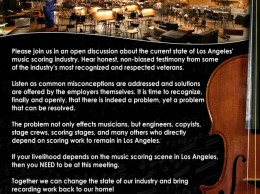Deane and Brian speak with Michael Barry and Michael Patti, co-founders of Cinesamples, about the recent decision by the American Federation of Musicians union to deny contracts to sample library producers.
Read More →Sequencing and Processing Woodwinds
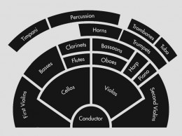In this second article about sequencing and mixing orchestral sections, Asimakis Reppas looks at how you can make your woodwind mockups come to life!
Read More →How to Use External VSTs with Sibelius 7: Part 2
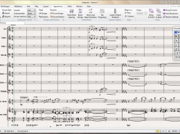In the second part of his tutorial, composer Derek Bourgeois deals with integrating VSL Vienna Instruments into Sibelius 7.
Read More →Orchestrating your Harmony in the Woodwind Section
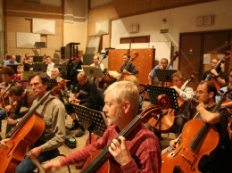Following the strings article series, Stellita Loukas now tackles woodwinds in a three-article series covering ranges, registers, characteristics, special techniques, how to orchestrate the melody and harmony within the woodwind section. This is the third and last article of the series, discussing ways in which the harmony can be orchestrated within the woodwind section.
Read More →Orchestrating a Melody for the Woodwind Section
Following the strings article series, Stellita Loukas now tackles woodwinds in a three-article series covering ranges, registers, characteristics, special techniques, how to orchestrate the melody and harmony within the woodwind section.
Read More →How to Use External VSTs with Sibelius 7: Part 1
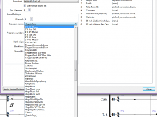Sibelius’ ability to use 3rd party VST instruments is a powerful tool for well-sounding playback while composing. Composer Derek Bourgeois in a two-part guest post guides you through his setup for integrating EW Play and VSL VI into Sibelius.
Read More →Woodwinds: The Underused Gems of the Orchestra
Following the strings article series, Stellita Loukas now tackles woodwinds in a three-article series covering ranges, registers, characteristics, special techniques, how to orchestrate the melody and harmony within the woodwind section. This is the first article presenting all the basic information you need to start writing music for woodwinds.
Read More →Podcast View All →
SCOREcast 35: Michael Barry and Michael Patti
Deane and Brian speak with Michael Barry and Michael Patti, co-founders of Cinesamples, about the recent decision by the American Federation of Musicians union to deny contracts to sample library producers.
Read More →SCOREcast 34: Peter Rotter
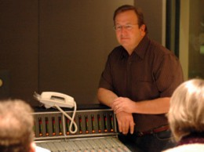Deane and Brian ring in six years on the air with premiere Los Angeles contractor Peter Rotter, whose mile-long resume features the majority of the biggest films of the last decade.
Read More →Happy 6th Anniversary, SCOREcast!
To kick off our 6th year at SCOREcast, the global SCO community put this video together to surprise our leadership team with an important announcement.
Read More →SCOREcast 33: Women in Film Music Roundtable
Deane Ogden sits down with five of film music’s most successful female composers for a discussion on the business. This insightful panel of composers includes Pinar Toprak, Sharon Farber, Marie-Anne Fischer, Tina Guo, and Ceyda Pirali and covers topics ranging from segueing between the concert and film worlds and the changing landscape of gender concerns in the film industry.
Read More →NAMM 2012: Sonokinetic Vivace
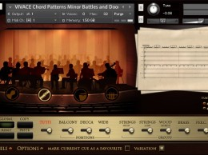Deane Ogden chats with Sonokinetic founder Rob Vandenberg about his newest creation, “Vivace”.
Read More →LA Scoring Strings 2.0
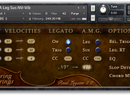Brian Ralston talks LA Scoring Strings creators Andrew Keresztes and Sebastian Katz into spilling the beans over the new LASS Version 2.0.
Read More →SCOREcast 32: Tom Salta
Veteran video game composer Tom Salta stops by to chat with the boys about the art and business of scoring video games during SCOREcast’s 5th Anniversary episode.
Read More →SCOREcast 31: Total Request (Sorta) LIVE!

In our first Q&A episode, we open up Twitter, Facebook, and a hangout on Google+ to hear what’s on your mind about writing, producing, “politiking”, and navigating the business.
Read More →Technology View All →
How to Use External VSTs with Sibelius 7: Part 2
In the second part of his tutorial, composer Derek Bourgeois deals with integrating VSL Vienna Instruments into Sibelius 7.
Read More →How to Use External VSTs with Sibelius 7: Part 1
Sibelius’ ability to use 3rd party VST instruments is a powerful tool for well-sounding playback while composing. Composer Derek Bourgeois in a two-part guest post guides you through his setup for integrating EW Play and VSL VI into Sibelius.
Read More →Spotlight on Sonokinetic’s “Vivace”

Composer Eanan Patterson takes a thorough look under the hood of Sonokinetic’s “Vivace” orchestral performance library.
Read More →How to Make Large DAW Templates Load Faster
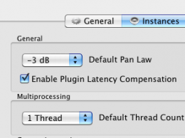Making a large template work well without hiccups, but still not demanding extremely powerful hardware is no easy task. But fortunately it is a task where there is plenty of room for optimizations. This article shows you a few tips and may come in handy.
Read More →Gear Alert: Sonokinetic releases BAGIPES for UVI
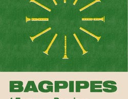With their release of BAGPIPES, Sonokinetic are supporting the UVI platform for the first time. The collection of four bagpipes from different European regions is available as a digital download.
Read More →Fingerprint your cues – Tyberis Music Database
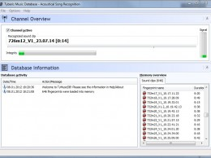Composer Stephan Römer in his first article in SCO has found a true gold nugget: Tyberis Music Database allows you to fingerprint your audio files and recognize them later just by playing them back. It is perfect for keeping track of cue use in a TV series or similar scoring situation.
Read More →CineBrass Core and Pro – A Retrospective

With Cinebrass Core and Pro, Cinesamples introduced a well-thought out brass library to market, giving composers some much-needed ammunition for their daily work. SCOREcast’s Guy Rowland look back at these two libraries and gives you the scoop about what they can do for you.
Read More →The Best in Free FX-Plugins

Composer and sound-designer Matt Bowdler looks at some of the most promising free plugins that can make your productions sound top-notch without you having to break the bank!
Read More →SCOREcast University View All →
Sequencing and Processing Woodwinds
In this second article about sequencing and mixing orchestral sections, Asimakis Reppas looks at how you can make your woodwind mockups come to life!
Read More →Orchestrating your Harmony in the Woodwind Section
Following the strings article series, Stellita Loukas now tackles woodwinds in a three-article series covering ranges, registers, characteristics, special techniques, how to orchestrate the melody and harmony within the woodwind section. This is the third and last article of the series, discussing ways in which the harmony can be orchestrated within the woodwind section.
Read More →Orchestrating a Melody for the Woodwind Section
Following the strings article series, Stellita Loukas now tackles woodwinds in a three-article series covering ranges, registers, characteristics, special techniques, how to orchestrate the melody and harmony within the woodwind section.
Read More →Woodwinds: The Underused Gems of the Orchestra
Following the strings article series, Stellita Loukas now tackles woodwinds in a three-article series covering ranges, registers, characteristics, special techniques, how to orchestrate the melody and harmony within the woodwind section. This is the first article presenting all the basic information you need to start writing music for woodwinds.
Read More →Writing for Music Libraries: Part 1
Russell Bell takes you through the nitty-gritty of writing for stock music libraries. In this first part of the series, he talks about how to break into the industry, what to expect and how to hone your skills for this kind of work.
Read More →The Origins of Music Notation

SCOREcast’s resident musicologist Yaiza Varona takes a trip back in time to examine the history and origins of music notation and how it came to be as we know it today.
Read More →Mixing 101

In his introductory article at SCOREcast University, Jorge Costa gives a brief overview of what mixing is all about and gives a few starter tips to make our lives easier.
Read More →Digital Performer 101: Why Choose It for Film Scoring?

John Graham explores the features that make Digital Performer one of the most popular sequencers among film and media composers.
Read More →Composition View All →
How to Use Chord Voicings Effectively – Part 2
In this second part in a series on chord voicings, Robin Hoffman writes about low interval limits and explains how to effectively apply them to your music.
Read More →How to Create Tension with Climbing Scales
An examination into the boring old scale, and how it can actually be exploited to create tension in your music.
Read More →The Running Line in Orchestral Writing
Composer Alain Mayrand teaches us how to add motion and activity to our orchestral writing by using running lines.
Read More →How to Use Chord Voicings Effectively – Part 1
Robin Hoffman kicks off a new series on Chord Voicings by discussing how we hear consonance and dissonance.
Read More →Value Studies: A Painter’s Technique for Composers
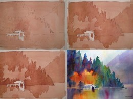How the Value Study, a useful technique from the world of painting, can be applied to the art of Composition.
Read More →Big and Small, Part 1: How to Make Your Music Small
In an industry where bigger is better, Jeff Tolbert discusses ways that you can take your music in the opposite direction and sound really small.
Read More →An Approach to Finding Your Voice
Alain Mayrand discusses what it means to find your own voice as a composer, and offers up suggestions for how to develop yours further.
Read More →Are You Trying to be “Cool”?

Is it possible to write in such a way that your music never sounds dated?
Read More →Business View All →
What Are You Worth?
Composer Brian Ralston puts a different spin on how you sell yourself as a composer in today’s over-saturated market.
Read More →Aurora: A Temple Defiled, but Not Destroyed
The Aurora tragedy sent shockwaves through the filmgoing community and has almost silenced the filmmaking one. Is that the way we’ll leave it?
Read More →51 Marketing Ideas for Film Music Composers
Attention spans are short and very demanding. If you want to make your art into a business, you have to brand yourself and then market your art. No getting away from it.
Read More →10 Lessons on “Breaking In”
I often get asked for a checklist of things one can do to break in to the business. Here is my personal “top ten” of lessons learned.
Read More →Worst Advice for Beginning Composers
When you are starting out, everyone has an opinion. And here’s mine.
Read More →You’re Not Ready
You’ve been told you’re talented. You just graduated music school. You have your plane ticket. You’re gonna be famous. Not so fast, Johnson.
Read More →Richard Bellis: Re-Sophisticaton

Advanced technology has merely enabled us to be efficient, but composing music for media is much more than efficiency.
Read More →Why Composers & Lyricists Should Affiliate With The Teamsters

The road to Unionization isn’t simply paved with negotiations about pension and benefits… It is about the core definition of what we do as media composers and how we are perceived by those who hire us to accomplish that work.
Read More →Translator

Four Ways to Subscribe
Join Your Community Chapter